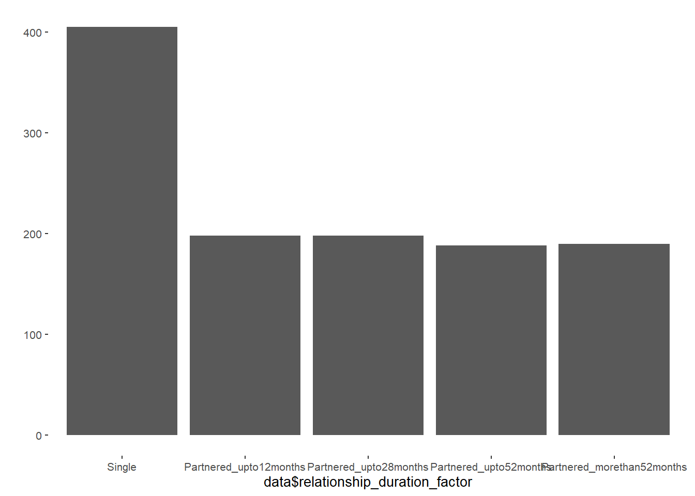

Datawrangling
Data and Functions
Select Variables
Initial Survey
data = all_surveys %>%
select(session,
age,
education_years,
net_income,
starts_with("bfi_agree"),
starts_with("bfi_consc"),
starts_with("bfi_open"),
starts_with("bfi_extra"),
starts_with("bfi_neuro"),
religiosity,
duration_relationship_years,
duration_relationship_month,
contraception_at_all,
contraception_method,
contraception_approach,
contraception_method_broad,
contraception_meeting_partner,
partner_attractiveness_face,
partner_attractiveness_body,
relationship_satisfaction_overall,
relationship_satisfaction_2,
relationship_satisfaction_3,
relationship_problems_R,
relationship_conflict_R,
satisfaction_sexual_intercourse,
reasons_for_exclusion)Diary
data_diary = diary %>%
select(session,
reasons_for_exclusion,
high_libido,
sex_active, sex_activity_anal_sex, sex_activity_bdsm_dom, sex_activity_bdsm_sub,
sex_activity_cuddling, sex_activity_cunnilingus, sex_activity_cybersex,
sex_activity_dirty_talk,
sex_activity_fellatio, sex_activity_kissing, sex_activity_masturbated_by_partner,
sex_activity_masturbated_partner, sex_activity_masturbation, sex_activity_other,
sex_activity_phone_skype_sex, sex_activity_pornography, sex_activity_sex,
sex_activity_touch_other,
sex_activity_toys, sex_activity_unclear, sex_other, sex_solo, sex_unclear,
days_done)Exclusion
Initial Survey
n_excluded = data %>% filter(reasons_for_exclusion != "") %>% nrow()
data = data %>% filter(reasons_for_exclusion == "")481 people were excluded.
Diary
Exclusion criteria based on initial
session_codes = data$session
data_diary = data_diary %>%
filter(session %in% session_codes)
length(data_diary$session)## [1] 53332The 1179 participants filled out 53332.
Skipped diary entry
n_skipped_diary = data_diary %>%
filter(reasons_for_exclusion %contains% "skipped_diary_entry") %>%
count()
data_diary = data_diary %>%
filter(!(reasons_for_exclusion %contains% "skipped_diary_entry"))745 days were skipped.
Dishonest answers
n_dishonest = data_diary %>%
filter(reasons_for_exclusion %contains% "dishonest") %>%
count()
data_diary = data_diary %>%
filter(!(reasons_for_exclusion %contains% "dishonest"))142 days contained dishonest answers.
Filled out less than 14 days
number_of_days = data_diary %>%
group_by(session) %>%
summarise(n = n()) %>%
rename(number_of_days = n)
data_diary = left_join(data_diary, number_of_days, by = "session")
data_diary_include = data_diary %>%
filter(as.numeric(number_of_days) >= 14)
data_diary_exclude = data_diary %>%
filter(as.numeric(number_of_days) < 14)
data_diary = data_diary_include170 participants were excluded because they filled out less than 14 days - resulting in 1014 excluded days.
Summary
In total 968 participants with 51431 diary days were included for the analyses in which outcomes were based on diary information.
Wrangle data
Income
Set factor level correctly
Relationship status (single vs partnered)
data = data %>% mutate(
relationship_status = ifelse(is.na(duration_relationship_month), "Single", "Partnered"))
qplot(data$relationship_status) + coord_flip()
Relationship duration
data = data %>%
mutate(relationship_duration = duration_relationship_years * 12 +
duration_relationship_month)
qplot(data$relationship_duration)
data = data %>%
mutate(relationship_duration_factor =
factor(ifelse(relationship_status == "Single",
"Single",
ifelse(relationship_duration <= 12,
"Partnered_upto12months",
ifelse(relationship_duration <= 28,
"Partnered_upto28months",
ifelse(relationship_duration <= 52,
"Partnered_upto52months",
ifelse(relationship_duration > 52,
"Partnered_morethan52months",
NA))))),
levels = c("Single", "Partnered_upto12months",
"Partnered_upto28months", "Partnered_upto52months",
"Partnered_morethan52months")))
qplot(data$relationship_duration_factor)
ggplot(data, aes(relationship_duration)) +
geom_histogram(aes(fill = relationship_duration_factor), bins = 100)
quantiles = quantile(as.numeric(data$relationship_duration),
na.rm = T,
probs = c(0, 0.125, 0.25, 0.375, 0.5,0.625, 0.75, 0.875, 1))
data = data %>%
mutate(relationship_duration_factor2 =
factor(ifelse(relationship_status == "Single",
"Single",
ifelse(relationship_duration <= quantiles[2],
"Partnered_upto6months",
ifelse(relationship_duration <= quantiles[3],
"Partnered_upto12months",
ifelse(relationship_duration <= quantiles[4],
"Partnered_upto20months",
ifelse(relationship_duration <= quantiles[5],
"Partnered_upto28months",
ifelse(relationship_duration <= quantiles[6],
"Partnered_upto38months",
ifelse(relationship_duration <= quantiles[7],
"Partnered_upto52months",
ifelse(relationship_duration <= quantiles[8],
"Partnered_upto85months",
ifelse(relationship_duration > quantiles[8],
"Partnered_morethan85months",
NA))))))))),
levels = c("Single", "Partnered_upto6months", "Partnered_upto12months",
"Partnered_upto20months", "Partnered_upto28months",
"Partnered_upto38months", "Partnered_upto52months",
"Partnered_upto85months", "Partnered_morethan85months")))Contraception approach
data = data %>%
mutate(# Participants, who indicated having no penetrative sex:
contraception_method = if_else(contraception_at_all == 5,
"barrier_no_penetrative_sex",
contraception_method),
# Participants, who indicated having no penetrative sex
# use no contraceptives
contraception_approach = factor(ifelse(
contraception_method =="barrier_no_penetrative_sex",
"nothing",
as.character(contraception_approach))),
# Fixed contraception_approach for
# "hormonal_pill, barrier_coitus_interruptus"
contraception_approach = factor(ifelse(
contraception_method == "hormonal_pill, barrier_coitus_interruptus",
"hormonal_pill_only",
as.character(contraception_approach))),
# Fixed contraception_approach for
# "hormonal_pill, barrier_no_penetrative_sex"
contraception_approach = factor(ifelse(
contraception_method == "hormonal_pill, barrier_no_penetrative_sex",
"hormonal_pill_only",
as.character(contraception_approach))),
# Fixed contraception_approach for
# "hormonal_other, barrier_condoms"
contraception_approach = factor(ifelse(
contraception_method == "hormonal_other, barrier_condoms",
"hormonal_other+condoms",
as.character(contraception_approach))),
# Fixed contraception_approach for
# "hormonal_other, barrier_condoms, barrier_coitus_interruptus"
contraception_approach = factor(ifelse(
contraception_method ==
"hormonal_other, barrier_condoms, barrier_coitus_interruptus",
"hormonal_other+condoms",
as.character(contraception_approach))),
contraception_approach = factor(ifelse(
contraception_approach == "hormonal+barrier",
"hormonal_pill+condoms",
as.character(contraception_approach))),
contraception_approach = factor(ifelse(
contraception_method %contains% "awareness" &
contraception_method %contains% "condoms" &
!(contraception_method %contains% "hormonal"),
"awareness+condoms",
as.character(contraception_approach))))
data = data %>%
mutate(contraception_approach = factor(contraception_approach,
levels = c("hormonal_pill_only",
"hormonal_other_only",
"hormonal_pill+condoms",
"hormonal_other+condoms",
"barrier_pessar",
"awareness",
"awareness+condoms",
"condoms",
"other",
"nothing")))
qplot(factor(data$contraception_approach, levels = rev(levels(data$contraception_approach)))) +
coord_flip()
##
## hormonal_pill_only hormonal_other_only hormonal_pill+condoms hormonal_other+condoms
## 254 61 159 17
## barrier_pessar awareness awareness+condoms condoms
## 85 20 100 380
## other nothing
## 14 89Current contraceptive status (hormonal vs. non hormonal)
data = data %>% mutate(
contraception_hormonal = factor(ifelse(contraception_approach %contains% "hormonal",
"yes",
"no")))
qplot(data$contraception_hormonal) + coord_flip()
##
## no yes
## 688 491Changed contraception since meeting their partner
There will be NAs because we asked about contracetion when meeting partner only if participants were currently in a relationship
## contraception_meeting_partner
## contraception_hormonal 0 1 <NA>
## no 251 150 287
## yes 133 240 118data = data %>% mutate(
contraception_change_since_meeting_partner =
ifelse(contraception_hormonal == "yes" & contraception_meeting_partner == 1,
"congruent_hormonal",
ifelse(contraception_hormonal == "no" & contraception_meeting_partner == 0,
"congruent_nonhormonal",
ifelse(contraception_hormonal == "yes" & contraception_meeting_partner == 0,
"switched_to_hormonal",
ifelse(contraception_hormonal == "no" &
contraception_meeting_partner == 1, "switched_to_nonhormonal",
NA)))))
qplot(data$contraception_change_since_meeting_partner) + coord_flip()
Contraception meeting partner
Diary information
calculate mean of libido, sex_active_frequency and actual sex frequency based on diary
Select Data
LS0tCnRpdGxlOiAiRGF0YXdyYW5nbGluZyIKb3V0cHV0OgogIGh0bWxfZG9jdW1lbnQ6CiAgICB0b2M6IHRydWUKICAgIHRvY19kZXB0aDogNAogICAgdG9jX2Zsb2F0OiB0cnVlCiAgICBjb2RlX2ZvbGRpbmc6ICdoaWRlJwogICAgc2VsZl9jb250YWluZWQ6IGZhbHNlCi0tLQoKIyMgRGF0YSBhbmQgRnVuY3Rpb25zCmBgYHtyIGRhdGEgYW5kIGZ1bmN0aW9uLCByZXN1bHRzPSdoaWRlJyxtZXNzYWdlPUYsd2FybmluZz1GfQpzb3VyY2UoIjBfaGVscGVycy5SIikKa25pdHI6Om9wdHNfY2h1bmskc2V0KHdhcm5pbmcgPSBGQUxTRSwgbWVzc2FnZSA9IEZBTFNFKQpwYW5kZXI6OnBhbmRlck9wdGlvbnMoInRhYmxlLnNwbGl0LnRhYmxlIiwgSW5mKQpwYW5kZXI6OnBhbmRlck9wdGlvbnMoJ3JvdW5kJywyKQpwYW5kZXI6OnBhbmRlck9wdGlvbnMoJ2RpZ2l0cycsMikKcGFuZGVyOjpwYW5kZXJPcHRpb25zKCdrZWVwLnRyYWlsaW5nLnplcm9zJyxUUlVFKQoKbG9hZCgiZGF0YS9jbGVhbmVkX3NlbGVjdGVkLnJkYXRhIikKYGBgCgoKIyMgU2VsZWN0IFZhcmlhYmxlcyB7LnRhYnNldH0KIyMjIEluaXRpYWwgU3VydmV5CmBgYHtyIHNlbGVjdCB2YXJpYWJsZXN9CmRhdGEgPSBhbGxfc3VydmV5cyAlPiUKICBzZWxlY3Qoc2Vzc2lvbiwKICAgICAgICAgYWdlLAogICAgICAgICBlZHVjYXRpb25feWVhcnMsCiAgICAgICAgIG5ldF9pbmNvbWUsCiAgICAgICAgIHN0YXJ0c193aXRoKCJiZmlfYWdyZWUiKSwKICAgICAgICAgc3RhcnRzX3dpdGgoImJmaV9jb25zYyIpLAogICAgICAgICBzdGFydHNfd2l0aCgiYmZpX29wZW4iKSwKICAgICAgICAgc3RhcnRzX3dpdGgoImJmaV9leHRyYSIpLAogICAgICAgICBzdGFydHNfd2l0aCgiYmZpX25ldXJvIiksCiAgICAgICAgIHJlbGlnaW9zaXR5LAogICAgICAgICBkdXJhdGlvbl9yZWxhdGlvbnNoaXBfeWVhcnMsCiAgICAgICAgIGR1cmF0aW9uX3JlbGF0aW9uc2hpcF9tb250aCwKICAgICAgICAgY29udHJhY2VwdGlvbl9hdF9hbGwsCiAgICAgICAgIGNvbnRyYWNlcHRpb25fbWV0aG9kLAogICAgICAgICBjb250cmFjZXB0aW9uX2FwcHJvYWNoLAogICAgICAgICBjb250cmFjZXB0aW9uX21ldGhvZF9icm9hZCwKICAgICAgICAgY29udHJhY2VwdGlvbl9tZWV0aW5nX3BhcnRuZXIsCiAgICAgICAgIHBhcnRuZXJfYXR0cmFjdGl2ZW5lc3NfZmFjZSwKICAgICAgICAgcGFydG5lcl9hdHRyYWN0aXZlbmVzc19ib2R5LAogICAgICAgICByZWxhdGlvbnNoaXBfc2F0aXNmYWN0aW9uX292ZXJhbGwsCiAgICAgICAgIHJlbGF0aW9uc2hpcF9zYXRpc2ZhY3Rpb25fMiwKICAgICAgICAgcmVsYXRpb25zaGlwX3NhdGlzZmFjdGlvbl8zLAogICAgICAgICByZWxhdGlvbnNoaXBfcHJvYmxlbXNfUiwKICAgICAgICAgcmVsYXRpb25zaGlwX2NvbmZsaWN0X1IsCiAgICAgICAgIHNhdGlzZmFjdGlvbl9zZXh1YWxfaW50ZXJjb3Vyc2UsCiAgICAgICAgIHJlYXNvbnNfZm9yX2V4Y2x1c2lvbikKYGBgCgojIyMgRGlhcnkKYGBge3Igc2VsZWN0IHZhcmlhYmxlcyBkaWFyeX0KZGF0YV9kaWFyeSA9IGRpYXJ5ICU+JQogIHNlbGVjdChzZXNzaW9uLAogICAgICAgICByZWFzb25zX2Zvcl9leGNsdXNpb24sCiAgICAgICAgIGhpZ2hfbGliaWRvLAogICAgICAgICBzZXhfYWN0aXZlLCBzZXhfYWN0aXZpdHlfYW5hbF9zZXgsIHNleF9hY3Rpdml0eV9iZHNtX2RvbSwgc2V4X2FjdGl2aXR5X2Jkc21fc3ViLAogICAgICAgICBzZXhfYWN0aXZpdHlfY3VkZGxpbmcsIHNleF9hY3Rpdml0eV9jdW5uaWxpbmd1cywgc2V4X2FjdGl2aXR5X2N5YmVyc2V4LAogICAgICAgICBzZXhfYWN0aXZpdHlfZGlydHlfdGFsaywKICAgICAgICAgc2V4X2FjdGl2aXR5X2ZlbGxhdGlvLCBzZXhfYWN0aXZpdHlfa2lzc2luZywgIHNleF9hY3Rpdml0eV9tYXN0dXJiYXRlZF9ieV9wYXJ0bmVyLAogICAgICAgICBzZXhfYWN0aXZpdHlfbWFzdHVyYmF0ZWRfcGFydG5lciwgc2V4X2FjdGl2aXR5X21hc3R1cmJhdGlvbiwgc2V4X2FjdGl2aXR5X290aGVyLAogICAgICAgICBzZXhfYWN0aXZpdHlfcGhvbmVfc2t5cGVfc2V4LCBzZXhfYWN0aXZpdHlfcG9ybm9ncmFwaHksIHNleF9hY3Rpdml0eV9zZXgsIAogICAgICAgICBzZXhfYWN0aXZpdHlfdG91Y2hfb3RoZXIsIAogICAgICAgICBzZXhfYWN0aXZpdHlfdG95cywgc2V4X2FjdGl2aXR5X3VuY2xlYXIsICBzZXhfb3RoZXIsIHNleF9zb2xvLCBzZXhfdW5jbGVhciwKICAgICAgICAgZGF5c19kb25lKQpgYGAKCgojIyBFeGNsdXNpb24gey50YWJzZXR9CiMjIyBJbml0aWFsIFN1cnZleQpgYGB7ciBleGNsdXNpb24gaW5pdGlhbCBzdXJ2ZXl9Cm5fZXhjbHVkZWQgPSBkYXRhICU+JSBmaWx0ZXIocmVhc29uc19mb3JfZXhjbHVzaW9uICE9ICIiKSAlPiUgbnJvdygpCmRhdGEgPSBkYXRhICU+JSBmaWx0ZXIocmVhc29uc19mb3JfZXhjbHVzaW9uID09ICIiKQpgYGAKYHIgbl9leGNsdWRlZGAgcGVvcGxlIHdlcmUgZXhjbHVkZWQuCgojIyMgRGlhcnkgIHsudGFic2V0fQojIyMjIEV4Y2x1c2lvbiBjcml0ZXJpYSBiYXNlZCBvbiBpbml0aWFsCmBgYHtyfQpzZXNzaW9uX2NvZGVzID0gZGF0YSRzZXNzaW9uCgpkYXRhX2RpYXJ5ID0gZGF0YV9kaWFyeSAlPiUKICBmaWx0ZXIoc2Vzc2lvbiAlaW4lIHNlc3Npb25fY29kZXMpCgpsZW5ndGgoZGF0YV9kaWFyeSRzZXNzaW9uKQpgYGAKVGhlIGByIGxlbmd0aCh1bmlxdWUoZGF0YV9kaWFyeSRzZXNzaW9uKSlgIHBhcnRpY2lwYW50cyBmaWxsZWQgb3V0IGByIGxlbmd0aChkYXRhX2RpYXJ5JHNlc3Npb24pYC4KCiMjIyMgU2tpcHBlZCBkaWFyeSBlbnRyeQpgYGB7cn0Kbl9za2lwcGVkX2RpYXJ5ID0gZGF0YV9kaWFyeSAlPiUKICBmaWx0ZXIocmVhc29uc19mb3JfZXhjbHVzaW9uICVjb250YWlucyUgInNraXBwZWRfZGlhcnlfZW50cnkiKSAlPiUKICBjb3VudCgpCgpkYXRhX2RpYXJ5ID0gZGF0YV9kaWFyeSAlPiUKICBmaWx0ZXIoIShyZWFzb25zX2Zvcl9leGNsdXNpb24gJWNvbnRhaW5zJSAic2tpcHBlZF9kaWFyeV9lbnRyeSIpKQpgYGAKYHIgbl9za2lwcGVkX2RpYXJ5YCBkYXlzIHdlcmUgc2tpcHBlZC4KCiMjIyMgRGlzaG9uZXN0IGFuc3dlcnMKYGBge3J9Cm5fZGlzaG9uZXN0ID0gZGF0YV9kaWFyeSAlPiUKICBmaWx0ZXIocmVhc29uc19mb3JfZXhjbHVzaW9uICVjb250YWlucyUgImRpc2hvbmVzdCIpICU+JQogIGNvdW50KCkKCmRhdGFfZGlhcnkgPSBkYXRhX2RpYXJ5ICU+JQogIGZpbHRlcighKHJlYXNvbnNfZm9yX2V4Y2x1c2lvbiAlY29udGFpbnMlICJkaXNob25lc3QiKSkKYGBgCmByIG5fZGlzaG9uZXN0YCBkYXlzIGNvbnRhaW5lZCBkaXNob25lc3QgYW5zd2Vycy4KCiMjIyMgRmlsbGVkIG91dCBsZXNzIHRoYW4gMTQgZGF5cwpgYGB7cn0KbnVtYmVyX29mX2RheXMgPSBkYXRhX2RpYXJ5ICU+JQogIGdyb3VwX2J5KHNlc3Npb24pICU+JQogIHN1bW1hcmlzZShuID0gbigpKSAlPiUKICByZW5hbWUobnVtYmVyX29mX2RheXMgPSBuKQogIApkYXRhX2RpYXJ5ID0gbGVmdF9qb2luKGRhdGFfZGlhcnksIG51bWJlcl9vZl9kYXlzLCBieSA9ICJzZXNzaW9uIikKCmRhdGFfZGlhcnlfaW5jbHVkZSA9IGRhdGFfZGlhcnkgJT4lCiAgZmlsdGVyKGFzLm51bWVyaWMobnVtYmVyX29mX2RheXMpID49IDE0KQoKZGF0YV9kaWFyeV9leGNsdWRlID0gZGF0YV9kaWFyeSAlPiUKICBmaWx0ZXIoYXMubnVtZXJpYyhudW1iZXJfb2ZfZGF5cykgPCAxNCkKCmRhdGFfZGlhcnkgPSBkYXRhX2RpYXJ5X2luY2x1ZGUKYGBgCmByIGxlbmd0aCh1bmlxdWUoZGF0YV9kaWFyeV9leGNsdWRlJHNlc3Npb24pKWAgcGFydGljaXBhbnRzIHdlcmUgZXhjbHVkZWQgYmVjYXVzZSB0aGV5IGZpbGxlZCBvdXQgbGVzcyB0aGFuIDE0IGRheXMgLSByZXN1bHRpbmcgaW4gYHIgbGVuZ3RoKGRhdGFfZGlhcnlfZXhjbHVkZSRzZXNzaW9uKWAgZXhjbHVkZWQgZGF5cy4KCiMjIyMgU3VtbWFyeSB7LmFjdGl2ZX0KSW4gdG90YWwgYHIgbGVuZ3RoKHVuaXF1ZShkYXRhX2RpYXJ5JHNlc3Npb24pKWAgcGFydGljaXBhbnRzIHdpdGggYHIgbGVuZ3RoKGRhdGFfZGlhcnkkc2Vzc2lvbilgIGRpYXJ5IGRheXMgd2VyZSBpbmNsdWRlZCBmb3IgdGhlIGFuYWx5c2VzIGluIHdoaWNoIG91dGNvbWVzIHdlcmUgYmFzZWQgb24gZGlhcnkgaW5mb3JtYXRpb24uIAoKIyMgV3JhbmdsZSBkYXRhIHsudGFic2V0fQoKIyMjIEluY29tZQpTZXQgZmFjdG9yIGxldmVsIGNvcnJlY3RseQpgYGB7cn0KZGF0YSA9IGRhdGEgJT4lCiAgbXV0YXRlKG5ldF9pbmNvbWUgPSBmYWN0b3IobmV0X2luY29tZSwKICAgICAgICAgICAgICAgICAgICAgICAgICAgICBsZXZlbHMgPSBjKCJldXJvX2x0XzUwMCIsICJldXJvXzUwMF8xMDAwIiwKICAgICAgICAgICAgICAgICAgICAgICAgICAgICAgICAgICAgICAgICJldXJvXzEwMDBfMjAwMCIsICJldXJvXzIwMDBfMzAwMCIsCiAgICAgICAgICAgICAgICAgICAgICAgICAgICAgICAgICAgICAgICAiZXVyb19ndF8zMDAwIiwgImRvbnRfdGVsbCIpKSkKYGBgCgoKIyMjIFJlbGF0aW9uc2hpcCBzdGF0dXMgKHNpbmdsZSB2cyBwYXJ0bmVyZWQpCmBgYHtyfQpkYXRhID0gZGF0YSAlPiUgbXV0YXRlKAogIHJlbGF0aW9uc2hpcF9zdGF0dXMgPSBpZmVsc2UoaXMubmEoZHVyYXRpb25fcmVsYXRpb25zaGlwX21vbnRoKSwgIlNpbmdsZSIsICJQYXJ0bmVyZWQiKSkKCnFwbG90KGRhdGEkcmVsYXRpb25zaGlwX3N0YXR1cykgKyBjb29yZF9mbGlwKCkKYGBgCgojIyMgUmVsYXRpb25zaGlwIGR1cmF0aW9uCmBgYHtyfQpkYXRhID0gZGF0YSAlPiUKICBtdXRhdGUocmVsYXRpb25zaGlwX2R1cmF0aW9uID0gZHVyYXRpb25fcmVsYXRpb25zaGlwX3llYXJzICogMTIgKwogICAgICAgICAgIGR1cmF0aW9uX3JlbGF0aW9uc2hpcF9tb250aCkKCnFwbG90KGRhdGEkcmVsYXRpb25zaGlwX2R1cmF0aW9uKQoKCmRhdGEgPSBkYXRhICU+JQogICBtdXRhdGUocmVsYXRpb25zaGlwX2R1cmF0aW9uX2ZhY3RvciA9IAogICAgICAgICAgICBmYWN0b3IoaWZlbHNlKHJlbGF0aW9uc2hpcF9zdGF0dXMgPT0gIlNpbmdsZSIsCiAgICAgICAgICAgICAgICAgICAiU2luZ2xlIiwKICAgICAgICAgICAgICAgICAgIGlmZWxzZShyZWxhdGlvbnNoaXBfZHVyYXRpb24gPD0gMTIsCiAgICAgICAgICAgICAgICAgICAgICAgICAgIlBhcnRuZXJlZF91cHRvMTJtb250aHMiLAogICAgICAgICAgICAgICAgICAgICAgICAgIGlmZWxzZShyZWxhdGlvbnNoaXBfZHVyYXRpb24gPD0gMjgsIAogICAgICAgICAgICAgICAgICAgICAgICAgICAgICAgICAiUGFydG5lcmVkX3VwdG8yOG1vbnRocyIsCiAgICAgICAgICAgICAgICAgICAgICAgICAgICAgICAgIGlmZWxzZShyZWxhdGlvbnNoaXBfZHVyYXRpb24gPD0gNTIsCiAgICAgICAgICAgICAgICAgICAgICAgICAgICAgICAgICAgICAgICAiUGFydG5lcmVkX3VwdG81Mm1vbnRocyIsCiAgICAgICAgICAgICAgICAgICAgICAgICAgICAgICAgICAgICAgICBpZmVsc2UocmVsYXRpb25zaGlwX2R1cmF0aW9uID4gNTIsCiAgICAgICAgICAgICAgICAgICAgICAgICAgICAgICAgICAgICAgICAiUGFydG5lcmVkX21vcmV0aGFuNTJtb250aHMiLAogICAgICAgICAgICAgICAgICAgICAgICAgICAgICAgICAgICAgICAgTkEpKSkpKSwKICAgICAgICAgICAgICAgICAgIGxldmVscyA9IGMoIlNpbmdsZSIsICJQYXJ0bmVyZWRfdXB0bzEybW9udGhzIiwKICAgICAgICAgICAgICAgICAgICAgICAgICAgICAgIlBhcnRuZXJlZF91cHRvMjhtb250aHMiLCAiUGFydG5lcmVkX3VwdG81Mm1vbnRocyIsCiAgICAgICAgICAgICAgICAgICAgICAgICAgICAgICJQYXJ0bmVyZWRfbW9yZXRoYW41Mm1vbnRocyIpKSkKCnFwbG90KGRhdGEkcmVsYXRpb25zaGlwX2R1cmF0aW9uX2ZhY3RvcikKCmdncGxvdChkYXRhLCBhZXMocmVsYXRpb25zaGlwX2R1cmF0aW9uKSkgKwogIGdlb21faGlzdG9ncmFtKGFlcyhmaWxsID0gcmVsYXRpb25zaGlwX2R1cmF0aW9uX2ZhY3RvciksIGJpbnMgPSAxMDApCgpxdWFudGlsZXMgPSBxdWFudGlsZShhcy5udW1lcmljKGRhdGEkcmVsYXRpb25zaGlwX2R1cmF0aW9uKSwKICAgICAgICAgICAgICAgICAgICAgbmEucm0gPSBULAogICAgICAgICAgICAgICAgICAgICBwcm9icyA9IGMoMCwgMC4xMjUsIDAuMjUsIDAuMzc1LCAwLjUsMC42MjUsIDAuNzUsIDAuODc1LCAxKSkKCmRhdGEgPSBkYXRhICU+JQogIG11dGF0ZShyZWxhdGlvbnNoaXBfZHVyYXRpb25fZmFjdG9yMiA9IAogICAgICAgICAgIGZhY3RvcihpZmVsc2UocmVsYXRpb25zaGlwX3N0YXR1cyA9PSAiU2luZ2xlIiwKICAgICAgICAgICAgICAgICAgIlNpbmdsZSIsCiAgICAgICAgICAgICAgICAgIGlmZWxzZShyZWxhdGlvbnNoaXBfZHVyYXRpb24gPD0gcXVhbnRpbGVzWzJdLAogICAgICAgICAgICAgICAgICAgICAgICAgIlBhcnRuZXJlZF91cHRvNm1vbnRocyIsCiAgICAgICAgICAgICAgICAgICAgICAgICBpZmVsc2UocmVsYXRpb25zaGlwX2R1cmF0aW9uIDw9IHF1YW50aWxlc1szXSwKICAgICAgICAgICAgICAgICAgICAgICAgICAgICAgICAiUGFydG5lcmVkX3VwdG8xMm1vbnRocyIsCiAgICAgICAgICAgICAgICAgICAgICAgICAgICAgICAgaWZlbHNlKHJlbGF0aW9uc2hpcF9kdXJhdGlvbiA8PSBxdWFudGlsZXNbNF0sCiAgICAgICAgICAgICAgICAgICAgICAgICAgICAgICAgICAgICAgICJQYXJ0bmVyZWRfdXB0bzIwbW9udGhzIiwKICAgICAgICAgICAgICAgICAgICAgICAgICAgICAgICAgICAgICAgaWZlbHNlKHJlbGF0aW9uc2hpcF9kdXJhdGlvbiA8PSBxdWFudGlsZXNbNV0sCiAgICAgICAgICAgICAgICAgICAgICAgICAgICAgICAgICAgICAgICAgICAgICAiUGFydG5lcmVkX3VwdG8yOG1vbnRocyIsCiAgICAgICAgICAgaWZlbHNlKHJlbGF0aW9uc2hpcF9kdXJhdGlvbiA8PSBxdWFudGlsZXNbNl0sCiAgICAgICAgICAgICAgICAgICJQYXJ0bmVyZWRfdXB0bzM4bW9udGhzIiwKICAgICAgICAgICAgICAgICAgaWZlbHNlKHJlbGF0aW9uc2hpcF9kdXJhdGlvbiA8PSBxdWFudGlsZXNbN10sCiAgICAgICAgICAgICAgICAgICAgICAgICAiUGFydG5lcmVkX3VwdG81Mm1vbnRocyIsCiAgICAgICAgICAgICAgICAgICAgICAgICBpZmVsc2UocmVsYXRpb25zaGlwX2R1cmF0aW9uIDw9IHF1YW50aWxlc1s4XSwKICAgICAgICAgICAgICAgICAgICAgICAgICAgICAgICAiUGFydG5lcmVkX3VwdG84NW1vbnRocyIsCiAgICAgICAgICAgICAgICAgICAgICAgICAgICAgICAgaWZlbHNlKHJlbGF0aW9uc2hpcF9kdXJhdGlvbiA+IHF1YW50aWxlc1s4XSwKICAgICAgICAgICAgICAgICAgICAgICAgICAgICAgICAgICAgICAgIlBhcnRuZXJlZF9tb3JldGhhbjg1bW9udGhzIiwKICAgICAgICAgICAgICAgICAgICAgICAgICAgICAgICAgICAgICAgTkEpKSkpKSkpKSksCiAgICAgICAgICAgbGV2ZWxzID0gYygiU2luZ2xlIiwgIlBhcnRuZXJlZF91cHRvNm1vbnRocyIsICJQYXJ0bmVyZWRfdXB0bzEybW9udGhzIiwKICAgICAgICAgICAgICAgICAgICAgICJQYXJ0bmVyZWRfdXB0bzIwbW9udGhzIiwgIlBhcnRuZXJlZF91cHRvMjhtb250aHMiLAogICAgICAgICAgICAgICAgICAgICAgIlBhcnRuZXJlZF91cHRvMzhtb250aHMiLCAiUGFydG5lcmVkX3VwdG81Mm1vbnRocyIsCiAgICAgICAgICAgICAgICAgICAgICAiUGFydG5lcmVkX3VwdG84NW1vbnRocyIsICJQYXJ0bmVyZWRfbW9yZXRoYW44NW1vbnRocyIpKSkKYGBgCgoKCiMjIyBDb250cmFjZXB0aW9uIGFwcHJvYWNoCmBgYHtyIGNvbnRyYWNlcHRpb24gYXBwcm9hY2h9CmRhdGEgPSBkYXRhICU+JQogIG11dGF0ZSgjIFBhcnRpY2lwYW50cywgd2hvIGluZGljYXRlZCBoYXZpbmcgbm8gcGVuZXRyYXRpdmUgc2V4OgogICAgICAgICBjb250cmFjZXB0aW9uX21ldGhvZCA9IGlmX2Vsc2UoY29udHJhY2VwdGlvbl9hdF9hbGwgPT0gNSwKICAgICAgICAgICAgICAgICAgICAgICAgICAgICAgICAgICAiYmFycmllcl9ub19wZW5ldHJhdGl2ZV9zZXgiLAogICAgICAgICAgICAgICAgICAgICAgICAgICAgICAgICAgIGNvbnRyYWNlcHRpb25fbWV0aG9kKSwKICAgICAgICAgIyBQYXJ0aWNpcGFudHMsIHdobyBpbmRpY2F0ZWQgaGF2aW5nIG5vIHBlbmV0cmF0aXZlIHNleAogICAgICAgICAjIHVzZSBubyBjb250cmFjZXB0aXZlcwogICAgICAgICBjb250cmFjZXB0aW9uX2FwcHJvYWNoID0gZmFjdG9yKGlmZWxzZSgKICAgICAgICAgICBjb250cmFjZXB0aW9uX21ldGhvZCA9PSJiYXJyaWVyX25vX3BlbmV0cmF0aXZlX3NleCIsCiAgICAgICAgICAgIm5vdGhpbmciLAogICAgICAgICAgIGFzLmNoYXJhY3Rlcihjb250cmFjZXB0aW9uX2FwcHJvYWNoKSkpLAogICAgICAgICAjIEZpeGVkIGNvbnRyYWNlcHRpb25fYXBwcm9hY2ggZm9yCiAgICAgICAgICMgImhvcm1vbmFsX3BpbGwsIGJhcnJpZXJfY29pdHVzX2ludGVycnVwdHVzIgogICAgICAgICBjb250cmFjZXB0aW9uX2FwcHJvYWNoID0gZmFjdG9yKGlmZWxzZSgKICAgICAgICAgICBjb250cmFjZXB0aW9uX21ldGhvZCA9PSAiaG9ybW9uYWxfcGlsbCwgYmFycmllcl9jb2l0dXNfaW50ZXJydXB0dXMiLAogICAgICAgICAgICJob3Jtb25hbF9waWxsX29ubHkiLAogICAgICAgICAgIGFzLmNoYXJhY3Rlcihjb250cmFjZXB0aW9uX2FwcHJvYWNoKSkpLAogICAgICAgICAjIEZpeGVkIGNvbnRyYWNlcHRpb25fYXBwcm9hY2ggZm9yCiAgICAgICAgICMgImhvcm1vbmFsX3BpbGwsIGJhcnJpZXJfbm9fcGVuZXRyYXRpdmVfc2V4IgogICAgICAgICBjb250cmFjZXB0aW9uX2FwcHJvYWNoID0gZmFjdG9yKGlmZWxzZSgKICAgICAgICAgICBjb250cmFjZXB0aW9uX21ldGhvZCA9PSAiaG9ybW9uYWxfcGlsbCwgYmFycmllcl9ub19wZW5ldHJhdGl2ZV9zZXgiLAogICAgICAgICAgICJob3Jtb25hbF9waWxsX29ubHkiLAogICAgICAgICAgIGFzLmNoYXJhY3Rlcihjb250cmFjZXB0aW9uX2FwcHJvYWNoKSkpLAogICAgICAgICAjIEZpeGVkIGNvbnRyYWNlcHRpb25fYXBwcm9hY2ggZm9yCiAgICAgICAgICMgImhvcm1vbmFsX290aGVyLCBiYXJyaWVyX2NvbmRvbXMiCiAgICAgICAgIGNvbnRyYWNlcHRpb25fYXBwcm9hY2ggPSBmYWN0b3IoaWZlbHNlKAogICAgICAgICAgIGNvbnRyYWNlcHRpb25fbWV0aG9kID09ICJob3Jtb25hbF9vdGhlciwgYmFycmllcl9jb25kb21zIiwKICAgICAgICAgICAiaG9ybW9uYWxfb3RoZXIrY29uZG9tcyIsCiAgICAgICAgICAgYXMuY2hhcmFjdGVyKGNvbnRyYWNlcHRpb25fYXBwcm9hY2gpKSksCiAgICAgICAgICMgRml4ZWQgY29udHJhY2VwdGlvbl9hcHByb2FjaCBmb3IKICAgICAgICAgIyAiaG9ybW9uYWxfb3RoZXIsIGJhcnJpZXJfY29uZG9tcywgYmFycmllcl9jb2l0dXNfaW50ZXJydXB0dXMiCiAgICAgICAgIGNvbnRyYWNlcHRpb25fYXBwcm9hY2ggPSBmYWN0b3IoaWZlbHNlKAogICAgICAgICAgIGNvbnRyYWNlcHRpb25fbWV0aG9kID09CiAgICAgICAgICAgICAiaG9ybW9uYWxfb3RoZXIsIGJhcnJpZXJfY29uZG9tcywgYmFycmllcl9jb2l0dXNfaW50ZXJydXB0dXMiLAogICAgICAgICAgICJob3Jtb25hbF9vdGhlcitjb25kb21zIiwKICAgICAgICAgICBhcy5jaGFyYWN0ZXIoY29udHJhY2VwdGlvbl9hcHByb2FjaCkpKSwKICAgICAgICAgY29udHJhY2VwdGlvbl9hcHByb2FjaCA9IGZhY3RvcihpZmVsc2UoCiAgICAgICAgICAgY29udHJhY2VwdGlvbl9hcHByb2FjaCA9PSAiaG9ybW9uYWwrYmFycmllciIsCiAgICAgICAgICAgImhvcm1vbmFsX3BpbGwrY29uZG9tcyIsCiAgICAgICAgICAgYXMuY2hhcmFjdGVyKGNvbnRyYWNlcHRpb25fYXBwcm9hY2gpKSksCiAgICAgICAgIGNvbnRyYWNlcHRpb25fYXBwcm9hY2ggPSBmYWN0b3IoaWZlbHNlKAogICAgICAgICAgIGNvbnRyYWNlcHRpb25fbWV0aG9kICVjb250YWlucyUgImF3YXJlbmVzcyIgJgogICAgICAgICAgICAgY29udHJhY2VwdGlvbl9tZXRob2QgJWNvbnRhaW5zJSAiY29uZG9tcyIgJgogICAgICAgICAgICAgIShjb250cmFjZXB0aW9uX21ldGhvZCAlY29udGFpbnMlICJob3Jtb25hbCIpLAogICAgICAgICAgICJhd2FyZW5lc3MrY29uZG9tcyIsCiAgICAgICAgICAgYXMuY2hhcmFjdGVyKGNvbnRyYWNlcHRpb25fYXBwcm9hY2gpKSkpCgoKZGF0YSA9IGRhdGEgJT4lCiAgbXV0YXRlKGNvbnRyYWNlcHRpb25fYXBwcm9hY2ggPSBmYWN0b3IoY29udHJhY2VwdGlvbl9hcHByb2FjaCwKICAgICAgICAgICAgICAgICAgICAgICAgICAgICAgICAgICAgICAgICBsZXZlbHMgPSBjKCJob3Jtb25hbF9waWxsX29ubHkiLAogICAgICAgICAgICAgICAgICAgICAgICAgICAgICAgICAgICAgICAgICAgICAgICAgICAgImhvcm1vbmFsX290aGVyX29ubHkiLAogICAgICAgICAgICAgICAgICAgICAgICAgICAgICAgICAgICAgICAgICAgICAgICAgICAgImhvcm1vbmFsX3BpbGwrY29uZG9tcyIsCiAgICAgICAgICAgICAgICAgICAgICAgICAgICAgICAgICAgICAgICAgICAgICAgICAgICAiaG9ybW9uYWxfb3RoZXIrY29uZG9tcyIsCiAgICAgICAgICAgICAgICAgICAgICAgICAgICAgICAgICAgICAgICAgICAgICAgICAgICAiYmFycmllcl9wZXNzYXIiLAogICAgICAgICAgICAgICAgICAgICAgICAgICAgICAgICAgICAgICAgICAgICAgICAgICAgImF3YXJlbmVzcyIsCiAgICAgICAgICAgICAgICAgICAgICAgICAgICAgICAgICAgICAgICAgICAgICAgICAgICAiYXdhcmVuZXNzK2NvbmRvbXMiLAogICAgICAgICAgICAgICAgICAgICAgICAgICAgICAgICAgICAgICAgICAgICAgICAgICAgImNvbmRvbXMiLAogICAgICAgICAgICAgICAgICAgICAgICAgICAgICAgICAgICAgICAgICAgICAgICAgICAgIm90aGVyIiwKICAgICAgICAgICAgICAgICAgICAgICAgICAgICAgICAgICAgICAgICAgICAgICAgICAgICJub3RoaW5nIikpKQoKcXBsb3QoZmFjdG9yKGRhdGEkY29udHJhY2VwdGlvbl9hcHByb2FjaCwgbGV2ZWxzID0gcmV2KGxldmVscyhkYXRhJGNvbnRyYWNlcHRpb25fYXBwcm9hY2gpKSkpICsKICBjb29yZF9mbGlwKCkKdGFibGUoZGF0YSRjb250cmFjZXB0aW9uX2FwcHJvYWNoKQpgYGAKCiMjIyBDdXJyZW50IGNvbnRyYWNlcHRpdmUgc3RhdHVzIChob3Jtb25hbCB2cy4gbm9uIGhvcm1vbmFsKQpgYGB7cn0KZGF0YSA9IGRhdGEgJT4lIG11dGF0ZSgKICBjb250cmFjZXB0aW9uX2hvcm1vbmFsID0gZmFjdG9yKGlmZWxzZShjb250cmFjZXB0aW9uX2FwcHJvYWNoICVjb250YWlucyUgImhvcm1vbmFsIiwKICAgICAgICAgICAgICAgICAgICAgICAgICAgICAgICAgICAgICAgICAieWVzIiwKICAgICAgICAgICAgICAgICAgICAgICAgICAgICAgICAgICAgICAgICAibm8iKSkpCnFwbG90KGRhdGEkY29udHJhY2VwdGlvbl9ob3Jtb25hbCkgKyBjb29yZF9mbGlwKCkKdGFibGUoZGF0YSRjb250cmFjZXB0aW9uX2hvcm1vbmFsKQpgYGAKCgojIyMgQ2hhbmdlZCBjb250cmFjZXB0aW9uIHNpbmNlIG1lZXRpbmcgdGhlaXIgcGFydG5lcgpUaGVyZSB3aWxsIGJlIE5BcyBiZWNhdXNlIHdlIGFza2VkIGFib3V0IGNvbnRyYWNldGlvbiB3aGVuIG1lZXRpbmcgcGFydG5lciBvbmx5IGlmIHBhcnRpY2lwYW50cyB3ZXJlIGN1cnJlbnRseSBpbiBhIHJlbGF0aW9uc2hpcApgYGB7cn0KY3Jvc3N0YWJzKH5jb250cmFjZXB0aW9uX2hvcm1vbmFsICsgY29udHJhY2VwdGlvbl9tZWV0aW5nX3BhcnRuZXIsIGRhdGEgPSBkYXRhKQpkYXRhID0gZGF0YSAlPiUgbXV0YXRlKAogIGNvbnRyYWNlcHRpb25fY2hhbmdlX3NpbmNlX21lZXRpbmdfcGFydG5lciA9CiAgICBpZmVsc2UoY29udHJhY2VwdGlvbl9ob3Jtb25hbCA9PSAieWVzIiAmIGNvbnRyYWNlcHRpb25fbWVldGluZ19wYXJ0bmVyID09IDEsCiAgICAgICAgICAgImNvbmdydWVudF9ob3Jtb25hbCIsCiAgICAgICAgICAgaWZlbHNlKGNvbnRyYWNlcHRpb25faG9ybW9uYWwgPT0gIm5vIiAmIGNvbnRyYWNlcHRpb25fbWVldGluZ19wYXJ0bmVyID09IDAsCiAgICAgICAgICAgICAgICAgICJjb25ncnVlbnRfbm9uaG9ybW9uYWwiLAogICAgICAgICAgICAgICAgICBpZmVsc2UoY29udHJhY2VwdGlvbl9ob3Jtb25hbCA9PSAieWVzIiAmIGNvbnRyYWNlcHRpb25fbWVldGluZ19wYXJ0bmVyID09IDAsCiAgICAgICAgICAgICAgICAgICAgICAgICAic3dpdGNoZWRfdG9faG9ybW9uYWwiLAogICAgICAgICAgICAgICAgICAgICAgICAgaWZlbHNlKGNvbnRyYWNlcHRpb25faG9ybW9uYWwgPT0gIm5vIiAmCiAgICAgICAgICAgICAgICAgICAgICAgICAgICAgICAgICBjb250cmFjZXB0aW9uX21lZXRpbmdfcGFydG5lciA9PSAxLCAic3dpdGNoZWRfdG9fbm9uaG9ybW9uYWwiLAogICAgICAgICAgICAgICAgICAgICAgICAgICAgICAgIE5BKSkpKSkKCnFwbG90KGRhdGEkY29udHJhY2VwdGlvbl9jaGFuZ2Vfc2luY2VfbWVldGluZ19wYXJ0bmVyKSArIGNvb3JkX2ZsaXAoKQpgYGAKCiMjIyBDb250cmFjZXB0aW9uIG1lZXRpbmcgcGFydG5lcgpgYGB7cn0KZGF0YSA9IGRhdGEgJT4lCiAgbXV0YXRlKGNvbnRyYWNlcHRpb25fbWVldGluZ19wYXJ0bmVyID0gZmFjdG9yKGlmX2Vsc2UoCiAgICBjb250cmFjZXB0aW9uX21lZXRpbmdfcGFydG5lciA9PSAxLAogICAgInllcyIsICJubyIpKSkKYGBgCgoKIyMjIERpYXJ5IGluZm9ybWF0aW9uCmNhbGN1bGF0ZSBtZWFuIG9mIGxpYmlkbywgc2V4X2FjdGl2ZV9mcmVxdWVuY3kgYW5kIGFjdHVhbCBzZXggZnJlcXVlbmN5IGJhc2VkIG9uIGRpYXJ5CmBgYHtyfQpkYXRhX2RpYXJ5X21lYW5zID0gZGF0YV9kaWFyeSAlPiUKICBncm91cF9ieShzZXNzaW9uKSAlPiUKICBzdW1tYXJpc2UoZGlhcnlfbGliaWRvX21lYW4gPSBtZWFuKGhpZ2hfbGliaWRvLCBuYS5ybSA9IFQpLAogICAgICAgICAgICBkaWFyeV9zZXhfYWN0aXZlX21lYW4gPSBtZWFuKHNleF9hY3RpdmUsIG5hLnJtID0gVCksCiAgICAgICAgICAgIGRpYXJ5X3NleF9hY3RpdmVfc2V4X21lYW4gPSBtZWFuKHNleF9hY3Rpdml0eV9zZXgsIG5hLnJtID0gVCkpCgpxcGxvdChkYXRhX2RpYXJ5X21lYW5zJGRpYXJ5X2xpYmlkb19tZWFuKQpxcGxvdChkYXRhX2RpYXJ5X21lYW5zJGRpYXJ5X3NleF9hY3RpdmVfbWVhbikKcXBsb3QoZGF0YV9kaWFyeV9tZWFucyRkaWFyeV9zZXhfYWN0aXZlX3NleF9tZWFuKQoKZGF0YSA9IGxlZnRfam9pbihkYXRhLCBkYXRhX2RpYXJ5X21lYW5zLCBieSA9ICJzZXNzaW9uIikKYGBgCgojIyBTZWxlY3QgRGF0YQpgYGB7cn0KZGF0YSA9IGRhdGEgJT4lCiAgc2VsZWN0KC1kdXJhdGlvbl9yZWxhdGlvbnNoaXBfeWVhcnMsIC1kdXJhdGlvbl9yZWxhdGlvbnNoaXBfbW9udGgsCiAgICAgICAgIC1jb250cmFjZXB0aW9uX2F0X2FsbCwgLWNvbnRyYWNlcHRpb25fbWV0aG9kLCAtY29udHJhY2VwdGlvbl9hcHByb2FjaCwgLWNvbnRyYWNlcHRpb25fbWV0aG9kX2Jyb2FkLAogICAgICAgICAtcmVhc29uc19mb3JfZXhjbHVzaW9uKQpgYGAKCiAKIyMgU2F2ZSBEYXRhCmBgYHtyfQpzYXZlKGRhdGEsIGRhdGEsIGZpbGUgPSAiZGF0YS9jbGVhbmVkX3NlbGVjdGVkX3dyYW5nbGVkLnJkYXRhIikKYGBgCgo=